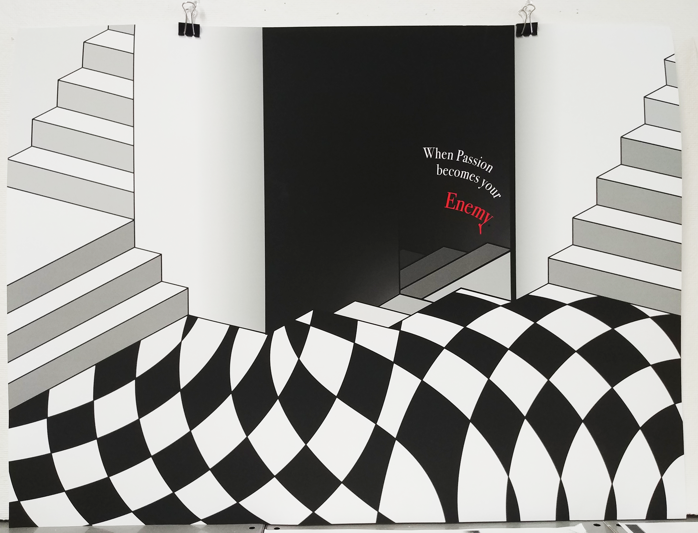

The topic in this project was to take an event in your life
that turned out to be a major turning point in your life.
The event I chose was when I realized that the career path I
chose was not where I want to be in the future.
This design showcased that my original path was not my desired
path and it turned out that it was hurting me more than helping
me. Which is where I came up with "When Passion becomes your Enemy".